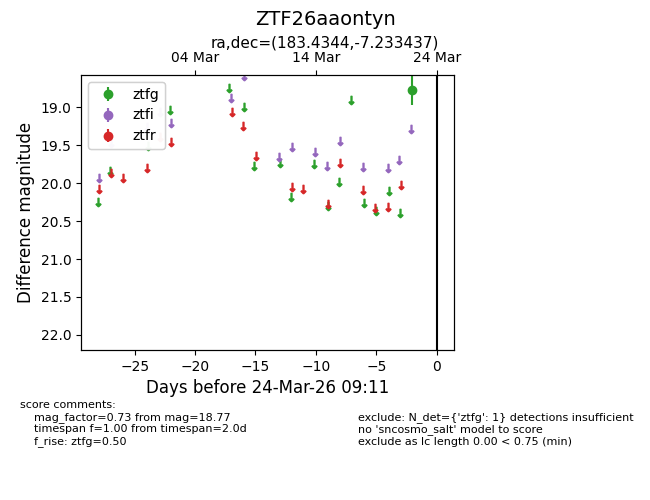
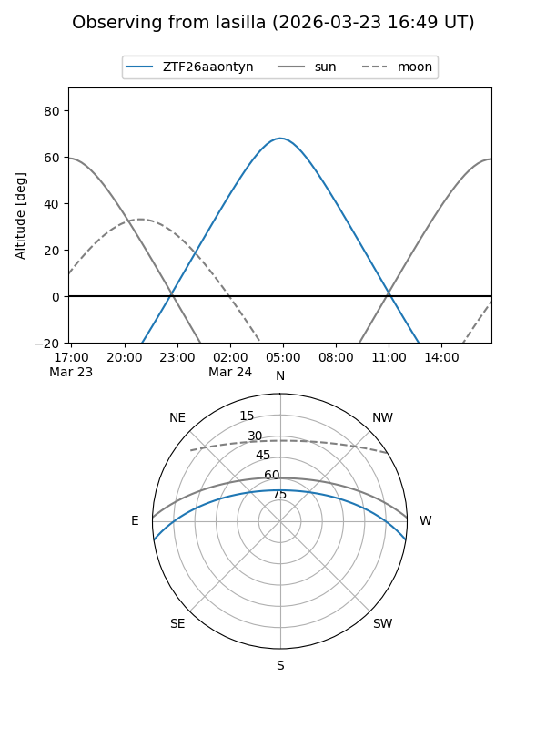
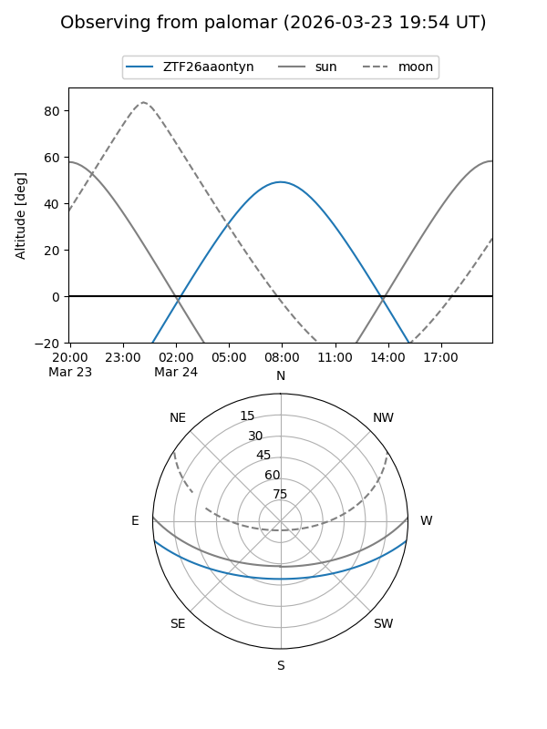

ZTF26aaontyn
Target ZTF26aaontyn at 2026-03-24 09:13
Aliases and brokers:
FINK: link
Lasair: link
ALeRCE: link
alt names
ZTF26aaontyn (ztf,fink_ztf)
Coordinates:
equatorial (ra, dec) = 183.4344,-7.23344
equatorial (HMS+DMS) = 12:13:44.26,-07:14:00.37
galactic (l, b) = (286.7082,+54.44645)
Flags:
Photometry:
last ztfg=18.77
1 ztfg detections
Lightcurve

Visibility


Additional plots